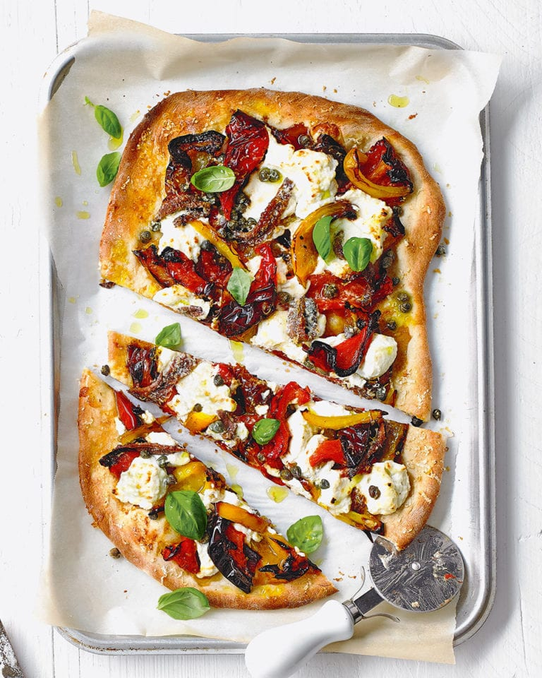

STARTERS
The start of a meal is a taster of what is to come so should set the bar high. From simple and delicious soups and salads to more elaborate tarts and terrines, be inspired to start your meal with a taste sensation.

White bean crostini with anchovy and lemon salsa
London’s vibrant Flat Iron Square in SE1 is home to a clutch of independent restaurants, food trucks, artisan bakers and bars

Peppers with roasted garlic, anchovies and basil
A stunning Italian starter by Angela Hartnett featuring sweet roasted red peppers, salty anchovies, roasted garlic and basil.
Baked figs with blue cheese and balsamic
A simple starter consisting of sweet figs wrapped in salty parma ham, topped with blue cheese and balsamic and then baked until gorgeously sticky.
Courgette fries with spicy chilli mayonnaise
Crisp courgette fries, a pot of homemade spicy chiili mayonnaise for dunking…and a glass of cold white wine. What could be better on a summer night?

Baked ‘nduja and burrata dip with olive breadsticks
Our ‘nduja and burrata dip is easy to make so, if you don’t have time to make the breadsticks, you could easily serve it with a shop-bought olive loaf for a seriously good starter..
Griddled octopus with potatoes and olives
Serve up Angela Hartnett’s octopus and potato starter as part of a big summer spread. It would work really well with her roasted red peppers and tomato pasta salad.
SALAD
A big, bountiful salad is the best way to celebrate delicious seasonal
Caprese Salad
Nothing embodies the essence of summer in southern Italy like vibrant colors of the flavorful insalata Caprese, a true classic of Neapolitan cuisine. The perfect combination of ripe, sun-kissed tomatoes, creamy mozzarella and fresh basil - this simple salad is believed to have originated on the island of Capri, hence the name.
Panzanella
Panzanella is an Italian salad made from pieces of stale, moistened bread, with the addition of tomatoes, onions, or basil, and a dressing of vinegar and olive oil. The salad is a specialty of Tuscany, where it is usually served in the summer, making use of the fresh summer vegetables that are in season.
Insalata Russa
Olivier salad is a Russian salad with variable ingredients, but it is typically made with chopped vegetables, meat, and mayonnaise. The key ingredients include diced potatoes, vegetables, eggs, chicken, or ham. This salad is one of the most important appetizers at the New Year's salad buffets in Russia, as well as in some of the other countries of the former USSR.
Insalata di rinforzo
Insalata di rinforzo or burdiglione is a traditional Italian salad originating from Naples. It consists of a mix of pickled and fresh vegetables. In order to prepare it, the bay leaves, peppercorns, carrots, bell peppers, and celery are cooked in a mix of water, white wine vinegar, salt, and sugar.
PASTA
If you're going to treat yourself to a hearty, comforting meal then Italian pasta is definitely the way to go.

Cavatelli with crab, lemon and chilli sauce
Cavatelli pasta can be a little fiddly to make, but is easy once you know how.Served with the creamy crab sauce, this dreamy pasta dish is can-I-have-thirds good.

Chicken parmigiana bake
This baked chicken version of the classic parmigiana makes an easy Friday night dinner – we suggest prepping it the night before, then bunging in the oven on Friday evening.

Creamy salmon pasta bake
Stretch two salmon fillets to feed four with this easy, creamy salmon pasta bake. Our budget-friendly recipe with peas and asparagus is ideal for midweek family dinners.
Sausage and fennel ragù with orecchiette
Looking for an easy sausage pasta recipe? This hearty orecchiette with a flavour-packed sausage and fennel ragù is ideal for busy nights.
PIZZA
Deep-pan and soft, thin and crunchy, classic or gourmet, with or without a stuffed crust… however it comes, pizza in Italy is a true institution and a symbol of the country the world over.

Margherita pizza with chorizo
Ready-made frozen pizza dough is a life-saver when you’re short on time midweek. Roll them out and top with creamy ricotta, salty anchovies and tangy capers in this easy pizza recipe.

Roast pepper, anchovy and ricotta pizza
This is a variety of Italian pizza that is traditionally topped with cherry tomatoes, mozzarella di bufala, olive oil, and fresh basil leaves. It provides a great way to use up leftover tomatoes, and some cooks like to finish it off with a drizzle of balsamic reduction on top.
Ham pizza with spinach
This easy pizza recipe with ham, spinach and mascarpone will quickly become a go-to midweek supper or weekend lunch dish.

Chicken Pizza
Forget delivery! Serve homemade Chicken Pizza instead. Chicken, sweet Italian sausage, cremini mushrooms, fontina cheese, and sliced red bell pepper are just a few of the ingredients we used to dress this dish up.